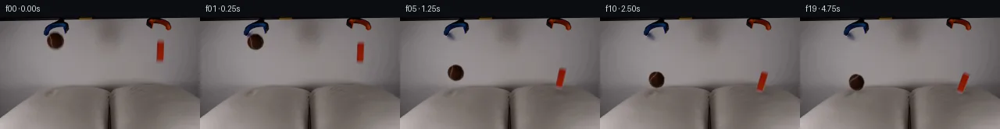

![首帧]()

Round 00
2026-11-04T18:58:57.438775+00:00像素候选变化代码 +290/−0inspection 更新
pixels 03d1ca66f39e1273 · code 37038812c9d90230
查看本轮 generate.py 真实 diff
--- previous/generate.py
+++ current/generate.py
@@ -0,0 +1,290 @@
+#!/usr/bin/env python3
+"""Generate a 20-frame, source-derived physical release sequence."""
+
+from pathlib import Path
+
+import cv2
+import numpy as np
+from PIL import Image, ImageDraw, ImageFont
+
+from artifact_io import save
+
+
+ROOT = Path(__file__).resolve().parent
+W, H = 256, 144
+
+
+def smoothstep(edge0, edge1, x):
+ q = np.clip((x - edge0) / (edge1 - edge0), 0.0, 1.0)
+ return q * q * (3.0 - 2.0 * q)
+
+
+def make_object_layers(source):
+ """Return antialiased alpha and premultiplied RGB for each source object."""
+ f = source.astype(np.float32)
+ hsv = cv2.cvtColor(source, cv2.COLOR_RGB2HSV).astype(np.float32)
+ yy, xx = np.mgrid[0:H, 0:W].astype(np.float32)
+ lum = f.mean(axis=2)
+
+ # Brown ball: combine chroma and darkness evidence inside a soft circle.
+ ball_rad = np.sqrt(((xx - 71.0) / 11.6) ** 2 + ((yy - 30.0) / 11.8) ** 2)
+ ball_shape = 1.0 - smoothstep(0.88, 1.08, ball_rad)
+ sat_evidence = smoothstep(14.0, 95.0, hsv[:, :, 1])
+ dark_evidence = smoothstep(112.0, 54.0, lum)
+ ball_alpha = ball_shape * np.maximum(sat_evidence, dark_evidence)
+ # Exclude the nearby blue grabber prong from the brown-ball cutout.
+ blue_prong = (f[:, :, 2] > f[:, :, 0] + 13.0) & (yy < 25)
+ ball_alpha[blue_prong] = 0.0
+ ball_alpha = cv2.GaussianBlur(ball_alpha, (3, 3), 0.55)
+ ball_alpha *= ball_shape
+
+ # Orange block: its high saturation provides a clean matte against the wall.
+ block_bounds = (
+ smoothstep(198.8, 200.6, xx)
+ * (1.0 - smoothstep(209.0, 211.1, xx))
+ * smoothstep(27.7, 30.4, yy)
+ * (1.0 - smoothstep(57.2, 60.3, yy))
+ )
+ red_dom = f[:, :, 0] - 0.5 * (f[:, :, 1] + f[:, :, 2])
+ block_evidence = np.maximum(
+ smoothstep(12.0, 105.0, hsv[:, :, 1]), smoothstep(4.0, 44.0, red_dom)
+ )
+ block_alpha = block_bounds * block_evidence
+ block_alpha = cv2.GaussianBlur(block_alpha, (3, 3), 0.5)
+ block_alpha *= block_bounds
+
+ return {
+ "ball": (ball_alpha, f * ball_alpha[:, :, None]),
+ "block": (block_alpha, f * block_alpha[:, :, None]),
+ }
+
+
+def clean_plate(source, layers):
+ """Repair only the two initial object locations while retaining the grabbers."""
+ ball_a = layers["ball"][0]
+ block_a = layers["block"][0]
+ mask = ((ball_a > 0.055) | (block_a > 0.055)).astype(np.uint8) * 255
+ mask = cv2.dilate(mask, np.ones((3, 3), np.uint8), iterations=1)
+ repaired = cv2.inpaint(source, mask, 5.0, cv2.INPAINT_TELEA)
+
+ # The ball is close to one blue fingertip. Restore confirmed blue pixels so
+ # inpainting never removes any part of the stationary release apparatus.
+ s = source.astype(np.int16)
+ blue = (s[:, :, 2] > s[:, :, 0] + 13) & (s[:, :, 2] > s[:, :, 1] + 8)
+ blue &= np.indices((H, W))[0] < 25
+ repaired[blue] = source[blue]
+ return repaired
+
+
+def deform_pillows(plate, left_depth, right_depth):
+ """Apply smooth local downward displacement and subtle crease shading."""
+ yy, xx = np.mgrid[0:H, 0:W].astype(np.float32)
+ vertical = np.exp(-((yy - 99.0) / 18.0) ** 2) * smoothstep(80.0, 91.0, yy)
+ left = np.exp(-((xx - 72.0) / 23.0) ** 2) * vertical
+ right = np.exp(-((xx - 204.0) / 23.0) ** 2) * vertical
+ displacement = left_depth * left + right_depth * right
+
+ map_x = xx
… diff truncated; 203 more lines …